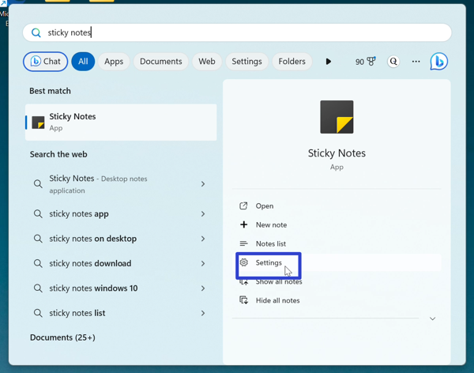
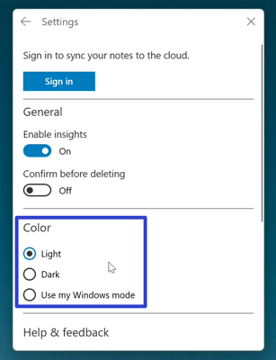
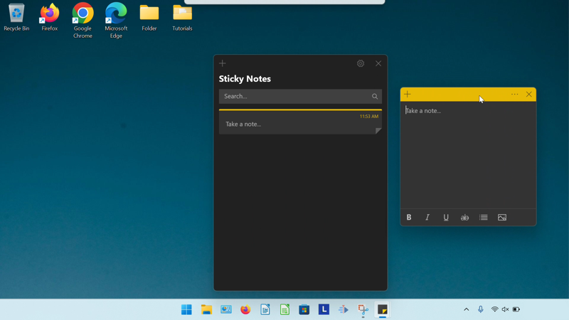
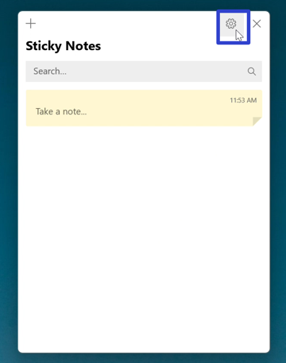
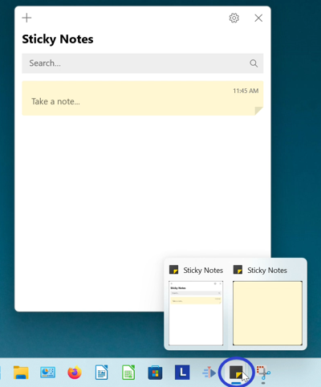
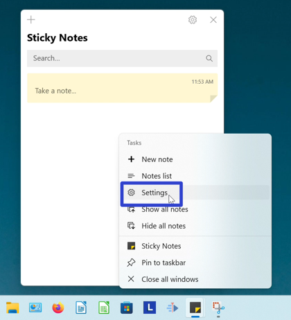

How to Change the Theme Color of the Microsoft Sticky Notes App (Windows 11)
This tutorial covers:
How to Change the Sticky Notes App Theme Color:
No time to scroll down? Click through these tutorial slides:
Watch a video tutorial:
How to Change the Sticky Notes App Theme Color With Start
- Step 1: Go down to the taskbar and click the Start (four blue squares) button.

- Step 2: In the Start window that opens, click the top search bar and type “sticky notes”.

- Step 3: On the search results screen, click “Settings”. 
- Step 4: In the Sticky Notes Settings window that opens, under the “Color” section click to select “Light”, “Dark”, or “Use my Windows mode”. 
- Click “Dark” to select dark mode. Click “Use my Windows mode” to use the current color theme setting of the Windows operating system. 
How to Change the Sticky Notes App Theme Color With the Notes List
- Step 1: Open the Notes List. Go to the upper right and click the “Settings” or gear button. 
- Step 2: In the Sticky Notes Settings window that opens, under the “Color” section click to select “Light”, “Dark”, or “Use my Windows mode”.
- Click “Dark” to select dark mode. Click “Use my Windows mode” to use the current color theme setting of the Windows operating system.
How to Change the Sticky Notes App Theme Color With Right Click
- Step 1: Go down to the taskbar and right click the open or pinned Sticky Notes app icon. 
- Step 2: In the menu that opens, click “Settings”. 
- Step 3: In the Sticky Notes Settings window that opens, under the “Color” section click to select “Light”, “Dark”, or “Use my Windows mode”.
- Click “Dark” to select dark mode. Click “Use my Windows mode” to use the current color theme setting of the Windows operating system.
Save a copy of these instructions with this free PDF tutorial.